ภาพรวมบทนี้ บทยาวที่สุดของครึ่ง Computer Architecture แบ่งเป็น 2 ส่วนใหญ่ ส่วนแรก — Data Representation: คอมพิวเตอร์เก็บตัวเลขและตัวอักษรเป็นบิตได้อย่างไร (unsigned, sign & magnitude, 1's/2's complement, bias, floating point IEEE 754, ASCII, Unicode) พร้อมใบงานที่ 2 ส่วนที่สอง — Instructions: Language of the Computer (RISC-V): Part I เรียนในห้อง — operands, registers, memory, instruction formats (R/I/S), logical/conditional operations, procedure calls; Part II ให้ศึกษาเอง — string copy, wide immediates, addressing, synchronization, linking/loading, sort example, arrays vs pointers, MIPS และ extensions
ต่อจาก Chapter 02 ที่ใช้ MARIE (เครื่องสอน) บทนี้ใช้ RISC-V ซึ่งเป็น ISA ที่ใช้จริง
สารบัญ
ส่วน A — Data Representation
- ภาพรวมและ register n บิต
- Number Systems และ Quantitative Numbers
- Signed Integers: Sign & Magnitude
- Complement Method (1's, 2's)
- เปรียบเทียบ S&M, 1's, 2's
- Bias Notation
- Floating Point และ IEEE 754
- Character Representation (ASCII, Unicode)
- Assignment 2
ส่วน B — RISC-V Part I (เรียนในห้อง) 10. Instruction Set Overview และ RISC-V 11. Arithmetic Operations และ Registers 12. Memory Operands, Endianness, Immediate 13. Numbers ใน RISC-V (2's complement, sign extension) 14. Representing Instructions: R, I, S format 15. Stored Program, Logical Operations 16. Conditional Operations, If, Loop, Basic Blocks 17. Procedure Calling (leaf, non-leaf, stack) 18. Memory Layout, Character Data, Byte/Halfword/Word
ส่วน C — RISC-V Part II (Self-study) 19. String Copy 20. 32-bit Constants, Branch/Jump Addressing, สรุป Addressing/Encoding 21. Synchronization 22. Translation and Startup (object module, linking, loading, dynamic linking, Java) 23. C Sort Example 24. Compiler Optimization, Language & Algorithm 25. Arrays vs Pointers 26. MIPS, Other RISC-V Instructions, Extensions
- คำศัพท์สำคัญ
- สรุปท้ายบท / จุดที่มักออกสอบ
ส่วน A — Data Representation
1. ภาพรวม
1.1 Data Representation Outline
- Representing numbers: Unsigned, Signed, Floating point
- Representing characters & Symbols: ASCII, Unicode
1.2 Data Representation in Computers
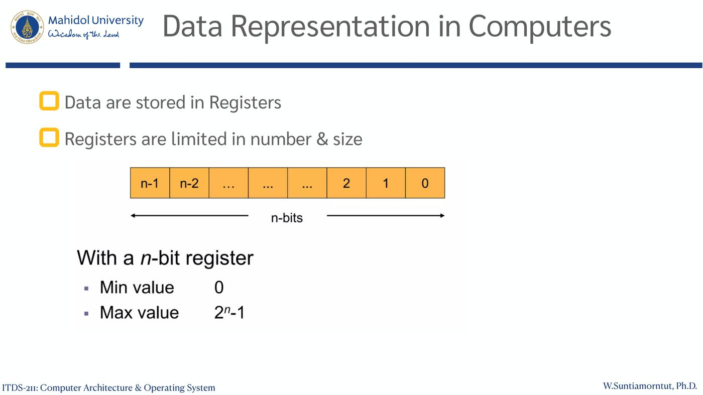
- ข้อมูลถูกเก็บใน registers
- registers มีจำนวนและขนาดจำกัด
- register n บิต (บิต n−1 ถึง 0) เก็บ unsigned ได้:
- Min value = 0
- Max value = 2ⁿ − 1
💡 8 บิต → 0 ถึง 255 / 16 บิต → 0 ถึง 65,535
1.3 การแบ่งประเภทข้อมูล
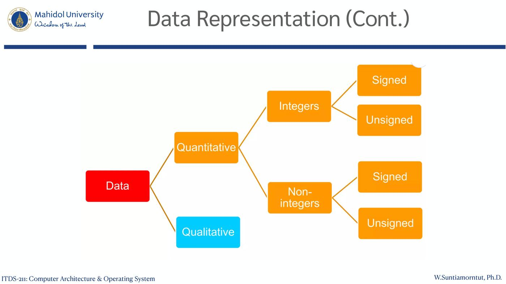
- Data
- Quantitative (เชิงปริมาณ = ตัวเลข)
- Integers: Signed / Unsigned
- Non-integers: Signed / Unsigned
- Qualitative (เชิงคุณภาพ = ตัวอักษร สัญลักษณ์)
- Quantitative (เชิงปริมาณ = ตัวเลข)
2. Number Systems และ Quantitative Numbers
| ระบบ | สัญลักษณ์ |
|---|---|
| Decimal (ฐาน 10) | 0–9 |
| Binary (ฐาน 2) | 0, 1 |
| Octal (ฐาน 8) | 0–7 |
| Hexadecimal (ฐาน 16) | 0–9, A, B, C, D, E, F |
Quantitative Numbers
- Integers: Unsigned (เช่น 20), Signed (เช่น +20, −20)
- Non-integers: Floating point numbers เช่น 10.25, 3.33333…, 1/8 = 0.125
3. Signed Integers
ปัญหา: ต้องมีวิธีแทนค่าลบ มี 3 วิธี:
- Sign & Magnitude (S&M)
- Complement method
- Bias notation / Excess notation
3.1 Sign & Magnitude Representation
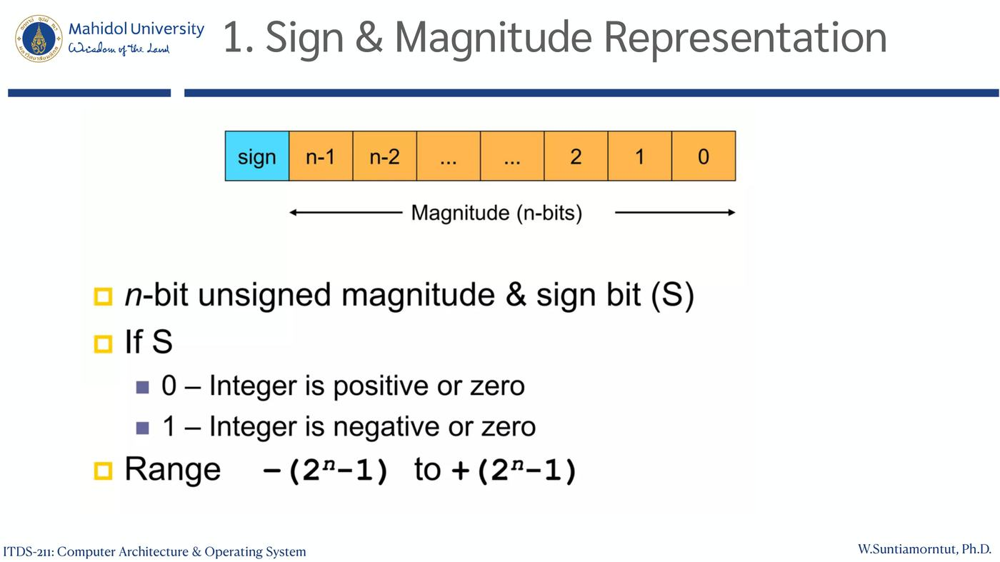
- ใช้ magnitude n บิตแบบ unsigned + sign bit (S) 1 บิตหน้าสุด
- S = 0 → จำนวนบวกหรือศูนย์ / S = 1 → จำนวนลบหรือศูนย์
- Range: −(2ⁿ − 1) ถึง +(2ⁿ − 1) (n = จำนวนบิต magnitude)
3.2 Example — Sign & Magnitude
- register 8 บิต มี min และ max เท่าไร? → magnitude 7 บิต → −127 ถึง +127 (คำตอบเสริม)
- 0000 0000 และ 1000 0000 เป็นเลขอะไร? → +0 และ −0
- การแทนศูนย์ไม่ unique (มีสองแบบ)
3.3 ข้อดีข้อเสีย S&M
| ✅ Advantages | ❌ Disadvantages |
|---|---|
| กลับเครื่องหมายง่าย (sign reversal) | บวกกับค่าลบไม่เหมือนการลบ — เช่น บวก 2 กับ −3 ต้อง ใช้ operation ต่างกัน |
| หาค่าสัมบูรณ์ |a| ง่าย — แค่พลิก sign bit | ศูนย์ไม่ unique |
4. Complement Method ⭐
4.1 แนวคิด
- Base = Radix — ระบบฐาน r มีสัญลักษณ์ r ตัว (ฐาน 2 มี 0, 1)
- 2 ชนิด: r's complement และ (r − 1)'s complement
- ตัวอย่าง: Decimal → 9's และ 10's complement / Binary → 1's และ 2's complement
4.2 Definition
ให้เลข m ในฐาน r มี n หลัก:
$$(r-1)\text{'s complement of } m = (r^n - 1) - m$$
$$r\text{'s complement of } m = (r^n - 1) - m + 1 = r^n - m$$
4.3 Example (ฐาน 10)
m = 382, n = 3 (3 หลัก) หา −382:
- 9's complement: 999 − 382 = 617
- 10's complement: 617 + 1 = 618
- −382 = 617 หรือ 618 ขึ้นกับว่าใช้ complement แบบไหน
- เรียกว่า complementary pair
4.4 1's Complement
- คำนวณจาก (2ⁿ − 1) − m = กลับทุกบิต (invert each bit) ของ m
- ตัวอย่าง: m = 0101 ในระบบ 4 บิต → 1111 − 0101 = 1010 → แทนค่า −5 ใน 1's complement
- ตัวอย่าง: m = 00101011 → 1's complement = 11010100
- m = 00000000 = 0 → 1's complement = 11111111 = −0 (ศูนย์สองแบบ)
- Range (8 บิต): −127 ถึง +127
4.5 Addition with 1's Complement
- ถ้าผลมี carry (ตัวทด) ให้เอาไปบวกที่ LSB — เรียกว่า end-around carry
- ตัวอย่าง: บวก 6 กับ −3 ในระบบ 3 บิต
- 6 = 110
- −3 = 100 (1's complement ของ 011)
- 110 + 100 = 1010 → carry 1 วนมาบวก → 010 + 1 = 011 = 3 ✅
4.6 2's Complement
- ไม่ต้องทำ end-around carry แบบ 1's complement
- วิธีสร้าง: หา 1's complement แล้ว บวก 1 ที่ LSB
- Range (8 บิต): −128 ถึง +127
- ได้ −128 เพิ่มมาเพราะการ +1 ทำให้ฝั่งลบมีเพิ่ม 1 ค่า
4.7 Example — 2's Complement
หา 2's complement ของ 0101011
- m = 0101011
- กลับบิต = 1010100
- +1 = 1010101
Short-cut:
- หาบิตที่เป็น 1 ตัวแรก โดยเริ่มจาก LSB (ขวาสุด)
- กลับทุกบิตที่อยู่หลัง (ซ้ายของ) 1 ตัวแรกนั้น
💡 0101011 → 1 ตัวแรกจากขวาคือบิต 0 คงไว้ แล้วกลับบิตที่เหลือด้านซ้าย: 1010101 ✅
บวก 6 กับ −5 ในระบบ 4 บิต
- 5 = 0101 → −5 = 1011
- 6 = 0110
- 0110 + 1011 = 10001 → ทิ้ง (discard) carry ด้านซ้าย → 0001 = 1 ✅
4.8 1's vs 2's Complement
| 1's complement | 2's complement |
|---|---|
| มีศูนย์สองแบบ (+0, −0) | มีศูนย์แบบเดียว |
| ช่วงค่าน้อยกว่า 2's complement | ช่วงค่าไม่สมมาตร (ลบมากกว่าบวก 1) |
ข้อดีร่วมของ complement:
- ไม่ต้องมีวงจรลบแยก — ลบ = บวกกับค่าลบ
- การทำ NOT มี ต้นทุนวงจรถูกกว่ามาก
- แต่ การคูณและหารช้า
5. S & M, 1's, & 2's (เทียบ 8 บิต)
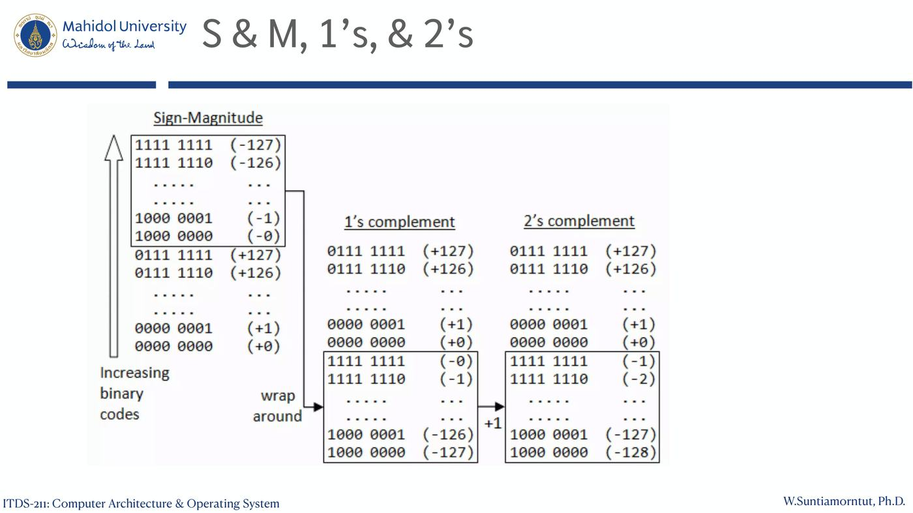
| Bit pattern | Sign-Magnitude | 1's complement | 2's complement |
|---|---|---|---|
| 0111 1111 | +127 | +127 | +127 |
| 0111 1110 | +126 | +126 | +126 |
| 0000 0001 | +1 | +1 | +1 |
| 0000 0000 | +0 | +0 | +0 |
| 1000 0000 | −0 | −127 | −128 |
| 1000 0001 | −1 | −126 | −127 |
| 1111 1110 | −126 | −1 | −2 |
| 1111 1111 | −127 | −0 | −1 |
💡 ภาพในสไลด์แสดง "increasing binary codes" และ "wrap around": ใน complement พอเลขบิตวนเกินค่าบวกสูงสุด จะวนไปเป็นค่าลบ
⚠️ 1111 1111 = −127 (S&M), −0 (1's), −1 (2's) — มักออกสอบ
6. Bias Notation (Excess Notation)
- ช่วงเลขที่ต้องการแทน ถูกบวก bias B (ค่าบวก) เพื่อให้ค่า unsigned ที่เล็กที่สุดมีค่าเท่ากับ −B
- ค่า B ในช่วงตัวเลขจะกลายเป็นศูนย์
- ค่าที่แทน:
$$\sum_{i=0}^{n} b_i 2^i - B$$
- ถ้า bias = 127 กับ 8 บิต: ช่วงคือ −127 (0 − 127) ถึง 128 (255 − 127)
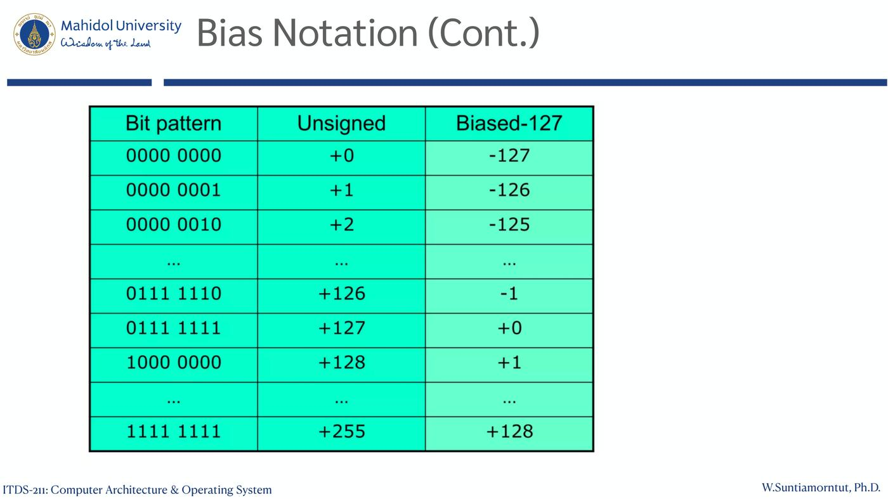
| Bit pattern | Unsigned | Biased-127 |
|---|---|---|
| 0000 0000 | +0 | −127 |
| 0000 0001 | +1 | −126 |
| 0000 0010 | +2 | −125 |
| 0111 1110 | +126 | −1 |
| 0111 1111 | +127 | +0 |
| 1000 0000 | +128 | +1 |
| 1111 1111 | +255 | +128 |
💡 อ่านค่า biased = ค่า unsigned − bias เช่น 1000 0000 = 128 − 127 = +1 — ใช้ใน exponent ของ floating point
7. Floating Point ⭐
7.1 ทำไมต้องมี
- ต้องแทน ค่าทศนิยม และ ค่าที่ใหญ่กว่า 2ⁿ − 1
- +3207.23 = 3.20723 × 10³
- −0.000321 = −3.21 × 10⁻⁴ → ประกอบด้วย Sign, Mantissa (3.21), Radix/base (10), Exponent (−4)
7.2 รูปแบบทั่วไป
$$N = (-1)^s \times m \times 2^e$$
- s = sign, m = mantissa, 2 = radix, e = exponent
- เก็บเป็นบิต: sign | exponent (e_{n−1}…e₀) | mantissa (m_{n−1}…m₀)
7.3 IEEE Floating Point Standard
| Single precision | Double precision | |
|---|---|---|
| ขนาดรวม | 32 bits | 64 bits |
| Sign | 1 bit (บิต 31) | 1 bit (บิต 63) |
| Exponent | 8 bits (บิต 30–23) | 11 bits (บิต 62–52) |
| Mantissa | 23 bits (บิต 22–0) | 52 bits (บิต 51–0) |
$$N = (-1)^s \times [1.m] \times 2^{E-127}$$
- E − 127 = e และ E = e + 127 (bias 127)
- สิ่งที่เก็บจริงคือ E (exponent ที่บวก bias แล้ว)
- mantissa เก็บเฉพาะส่วนหลังจุด เพราะหน้าจุดเป็น 1 เสมอ (normalized)
7.4 Single Precision
- 23-bit mantissa: m มีค่าตั้งแต่ 1 ถึง (2 − 2⁻²³)
- 8-bit exponent:
- E มีค่า 1 ถึง 254
- 0 และ 255 สงวนไว้ แทน −∞, +∞, NaN
- e มีค่า −126 ถึง +127
- ค่าสูงสุดที่แทนได้ ≈ 2 × 2¹²⁷ = 2¹²⁸
7.5 Review — Binary Fractions
101.1101₂ เป็นฐานสิบ = 2²×1 + 2¹×0 + 2⁰×1 + 2⁻¹×1 + 2⁻²×1 + 2⁻³×0 + 2⁻⁴×1 = 4 + 0 + 1 + 0.5 + 0.25 + 0 + 0.0625 = 5.8125
5.8125₁₀ เป็นฐานสอง
- ส่วนจำนวนเต็ม: 5 = 101
- ส่วนทศนิยม: คูณ 2 ไปเรื่อย ๆ จนได้ 1 แล้วเก็บเลขหน้าจุด
- 0.8125 × 2 = 1.625
- 0.625 × 2 = 1.25
- 0.25 × 2 = 0.5
- 0.5 × 2 = 1.0
- → 0.8125₁₀ = .1101₂
- 5.8125₁₀ = 101.1101₂
7.6 Example — Single Precision ของ 17.15₁₀ ⭐
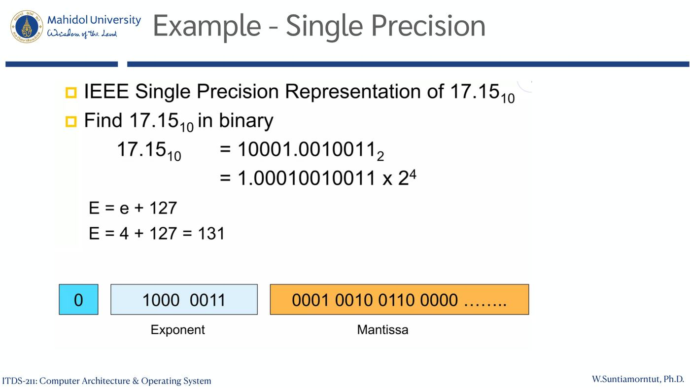
- แปลงเป็นฐานสอง: 17.15₁₀ = 10001.0010011…₂ (17 = 10001, 0.15 = .001001100110… วนซ้ำ)
- Normalize: = 1.00010010011… × 2⁴ → e = 4
- หา E: E = e + 127 = 4 + 127 = 131 = 1000 0011
- Mantissa: ตัด "1." ออก เหลือ 0001 0010 0110 0000… (ตามสไลด์)
- ผลลัพธ์:
| Sign | Exponent | Mantissa |
|---|---|---|
| 0 | 1000 0011 | 0001 0010 0110 0000 …… |
⚠️ 0.15 ในฐานสองเป็น ทศนิยมไม่รู้จบ (.0010011001100…) จึงเก็บได้แค่ค่าประมาณ — นี่คือเหตุผลที่ 0.1 + 0.2 ในคอมพิวเตอร์ไม่เท่ากับ 0.3 พอดี (คำอธิบายเสริม)
8. Character Representation
8.1 ภาพรวม
- เป็นข้อมูล เชิงคุณภาพ (qualitative) — แทนคุณภาพหรือคุณลักษณะ
- ประกอบด้วย:
- Letters: a-z, A-Z
- Digits: 0-9
- Symbols: !, @, *, /, &, #, $
- Control characters:
, , ,
- 1 byte (8 บิต) แทนได้ 256 ตัวอักษร
- มาตรฐาน:
- ASCII — American Standard Code for Information Interchange
- EBCDIC — Extended Binary-Coded Decimal Interchange Code
- Unicode
8.2 ASCII
- มาตรฐานโดยพฤตินัยทั่วโลก
- ใช้แทน: ตัวอักษรละตินพิมพ์ใหญ่-เล็ก, ตัวเลข, เครื่องหมายวรรคตอน, control characters
- มี 128 รหัสมาตรฐาน
- แทนด้วย เลขฐานสอง 7 บิต (000 0000 ถึง 111 1111)
- บวก parity bit 1 บิต
8.3 ASCII Table (ส่วนสำคัญ)
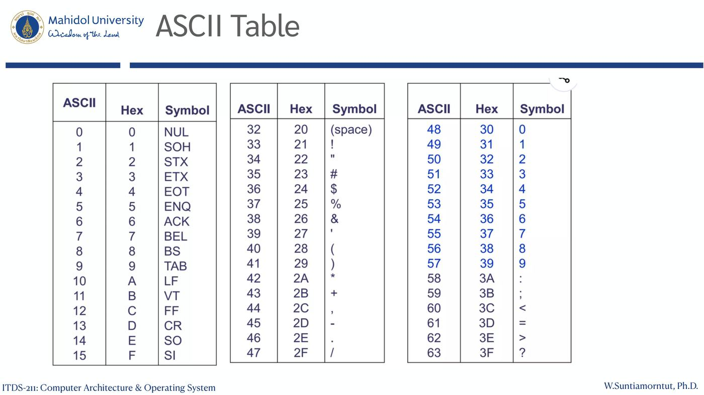
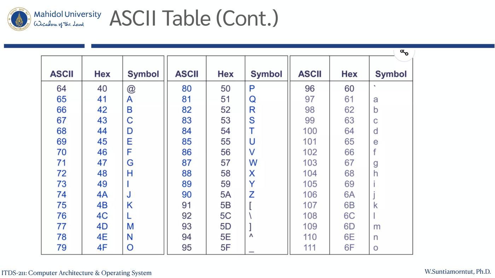
| ช่วง (ฐานสิบ) | Hex | ตัวอักษร |
|---|---|---|
| 0–31 | 00–1F | control: NUL, SOH, STX, ETX, EOT, ENQ, ACK, BEL(7), BS(8), TAB(9), LF(10), VT, FF, CR(13), SO, SI … |
| 32 | 20 | (space) |
| 33–47 | 21–2F | ! " # $ % & ' ( ) * + , - . / |
| 48–57 | 30–39 | 0–9 |
| 58–64 | 3A–40 | : ; < = > ? @ |
| 65–90 | 41–5A | A–Z |
| 91–96 | 5B–60 | [ \ ] ^ _ ` |
| 97–122 | 61–7A | a–z |
8.4 ASCII — Things to Note ⭐
- รหัส ASCII ของตัวเลข ไม่เท่ากับค่าตัวเลขจริง (เช่น '0' = 48 ไม่ใช่ 0)
- ตัวพิมพ์ใหญ่กับเล็กต่างกัน 0x20
- Shift key เคลียร์บิตที่ 5
- 0x20 = 32 = 0010 0000
- A = 65 = 0100 0001 / a = 97 = 0110 0001
- ภาษาส่วนใหญ่ต้องการมากกว่า 128 ตัวอักษร (จึงมี Unicode)
9. Assignment 2 (ใบงานที่ 2)
- งานกลุ่ม กลุ่มละ 2 คน
- ใช้ เลขฐาน 2 จำนวน 16 บิต แทนตัวเลข
- ทีม กำหนดตัวตั้งและตัวกระทำเอง ได้
- แสดง ขั้นตอนการคำนวณ "add" และ "sub" ของ data representation 2 แบบ: (1) sign magnitude และ (2) two's complement
ส่ง: Upload งานทุกคนใน MyCourse
- Section 1: DEADLINE 23.59 น. วันอาทิตย์ที่ 23 สิงหาคม 2569
- Section 2: DEADLINE 23.59 น. วันอังคารที่ 25 สิงหาคม 2569
ส่วน B — Instructions: Language of the Computer (RISC-V) — Part I
10. Instruction Set Overview และ RISC-V
10.1 Instruction Set Overview
- คอมพิวเตอร์แต่ละเครื่องมี instruction set ต่างกัน
- คอมพิวเตอร์ยุคแรกมีชุดคำสั่งเรียบง่ายมาก → implement ง่าย
- คอมพิวเตอร์สมัยใหม่หลายรุ่นก็มีชุดคำสั่งเรียบง่าย
10.2 RISC-V Instruction Set
- พัฒนาที่ UC Berkeley เป็น open ISA
- ปัจจุบันดูแลโดย RISC-V Foundation (riscv.org)
- เป็นแบบฉบับของ ISA สมัยใหม่หลายตัว (ดู RISC-V Reference Data tear-out card)
- ISA คล้าย ๆ กันมีส่วนแบ่งตลาด embedded core ขนาดใหญ่
- ใช้ใน consumer electronics, network/storage equipment, cameras, printers, …
11. Arithmetic Operations และ Registers
11.1 Arithmetic Operations
- Add และ subtract มี 3 operands: 2 sources + 1 destination
add a, b, c // a gets b + c
- ทุก arithmetic operation มีรูปแบบนี้
- Design Principle 1: Simplicity favours regularity
- ความสม่ำเสมอทำให้ implement ง่าย
- ความเรียบง่ายทำให้ได้ประสิทธิภาพสูงในต้นทุนต่ำ
11.2 Arithmetic Example
C code: f = (g + h) - (i + j);
add t0, g, h // temp t0 = g + h
add t1, i, j // temp t1 = i + j
sub f, t0, t1 // f = t0 - t1
(สไลด์เขียนบรรทัดสุดท้ายเป็น add f, t0, t1 แต่ comment บอก f = t0 − t1 ที่ถูกต้องคือ sub)
11.3 Register Operands
- arithmetic instructions ใช้ register เป็น operand
- RISC-V มี register file ขนาด 32 × 64-bit
- ใช้กับ ข้อมูลที่เข้าถึงบ่อย
- ข้อมูล 64 บิต เรียกว่า "doubleword"
- มี general purpose registers 32 ตัว: x0 ถึง x31 (สไลด์เขียน "x0 to x30")
- ข้อมูล 32 บิต เรียกว่า "word"
- Design Principle 2: Smaller is faster — เทียบกับ main memory ที่มีหลายล้านตำแหน่ง
11.4 RISC-V Registers ⭐
| Register | หน้าที่ |
|---|---|
| x0 | ค่าคงที่ 0 (เปลี่ยนไม่ได้) |
| x1 | return address |
| x2 | stack pointer |
| x3 | global pointer |
| x4 | thread pointer |
| x5–x7, x28–x31 | temporaries |
| x8 | frame pointer |
| x9, x18–x27 | saved registers |
| x10–x11 | function arguments/results |
| x12–x17 | function arguments |
11.5 Register Operand Example
C: f = (g + h) - (i + j); โดย f, …, j อยู่ใน x19, x20, …, x23
add x5, x20, x21 // x5 = g + h
add x6, x22, x23 // x6 = i + j
sub x19, x5, x6 // f = x5 - x6
12. Memory Operands, Endianness, Immediate
12.1 Endian Support
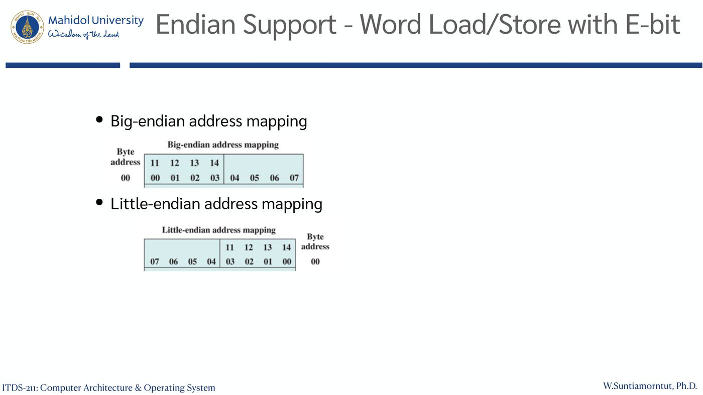
- Big-endian: byte ที่มีนัยสำคัญมากที่สุดอยู่ที่ address ต่ำสุด (byte address 00–07 เรียงซ้ายไปขวาตรงกับค่า 11 12 13 14 …)
- Little-endian: byte ที่มีนัยสำคัญน้อยที่สุดอยู่ที่ address ต่ำสุด (เรียงกลับกัน)
12.2 Memory Operands
- Main memory ใช้กับข้อมูลประกอบ (composite data): arrays, structures, dynamic data
- การทำ arithmetic:
- โหลดค่าจาก memory เข้า register
- เก็บผลจาก register กลับลง memory
- Memory เป็น byte addressed — แต่ละ address ระบุข้อมูล 8 บิต (1 byte)
- RISC-V เป็น Little Endian
- byte ที่มีนัยสำคัญน้อยสุดอยู่ที่ address ต่ำสุดของ word
- c.f. Big Endian: byte ที่มีนัยสำคัญมากสุดอยู่ที่ address ต่ำสุด
- RISC-V ไม่บังคับให้ word ต้อง align ใน memory (ต่างจาก ISA อื่นบางตัว)
💡 เลข 0x12345678: little-endian เก็บ 78 56 34 12 / big-endian เก็บ 12 34 56 78 (อ่านจาก address ต่ำไปสูง) (ตัวอย่างเสริม)
12.3 Memory Operand Example ⭐
C: A[12] = h + A[8]; — h ใน x21, base address ของ A ใน x22
- Index 8 ต้องใช้ offset 64 เพราะ 8 bytes ต่อ doubleword
ld x9, 64(x22) // x9 = A[8] (8 × 8 = 64)
add x9, x21, x9 // x9 = h + A[8]
sd x9, 96(x22) // A[12] = x9 (12 × 8 = 96)
⚠️ offset = index × 8 (doubleword 8 bytes) — ลืมคูณ 8 เป็นข้อผิดพลาดที่พบบ่อย
ld= load doubleword,sd= store doubleword
12.4 Registers vs Memory
- register เข้าถึงเร็วกว่า memory
- ทำงานกับข้อมูลใน memory ต้อง load และ store → มีคำสั่งต้องรันมากขึ้น
- compiler ต้องใช้ register เก็บตัวแปรให้มากที่สุด
- เก็บลง memory เฉพาะตัวแปรที่ใช้ไม่บ่อย
- Register optimization สำคัญมาก!
12.5 Immediate Operands
- ค่าคงที่ระบุในคำสั่งเลย:
addi x22, x22, 4 - Make the common case fast (หนึ่งใน Great Ideas)
- ค่าคงที่ขนาดเล็กพบบ่อย
- immediate operand ไม่ต้องโหลดค่าจาก memory
13. RISC-V: Numbers
- Unsigned Binary Integers: range 0 ถึง +2ⁿ − 1
- 2s-Complement Signed Integers: range −2ⁿ⁻¹ ถึง +2ⁿ⁻¹ − 1
- Signed Negation: Complement and add 1
- ตัวอย่าง negate +2: +2 = 0000 0000 … 0010₂ → −2 = 1111 1111 … 1101₂ + 1 = 1111 1111 … 1110₂
- Sign Extension (ขยายจำนวนบิตโดยรักษาค่า): ใน RISC-V instruction set
lb: sign-extend byte ที่โหลดมา (คัดลอก sign bit ไปเติมด้านซ้าย)lbu: zero-extend byte ที่โหลดมา (เติม 0)
💡 sign extension: −2 แบบ 8 บิต = 1111 1110 → แบบ 16 บิต = 1111 1111 1111 1110 (เติม 1 ตาม sign bit) (ตัวอย่างเสริม)
14. Representing Instructions ⭐⭐
14.1 หลักการ
- คำสั่งถูกเข้ารหัสเป็นเลขฐานสอง เรียกว่า machine code
- RISC-V instructions:
- เข้ารหัสเป็น instruction word ขนาด 32 บิต
- มี format จำนวนน้อย เข้ารหัส operation code (opcode), หมายเลข register, …
- Regularity!
14.2 R-format Instructions
| funct7 | rs2 | rs1 | funct3 | rd | opcode |
|---|---|---|---|---|---|
| 7 bits | 5 bits | 5 bits | 3 bits | 5 bits | 7 bits |
| Field | ความหมาย |
|---|---|
| opcode | operation code |
| rd | destination register number |
| funct3 | 3-bit function code (additional opcode) |
| rs1 | first source register number |
| rs2 | second source register number |
| funct7 | 7-bit function code (additional opcode) |
14.3 R-format Example ⭐
add x9, x20, x21
| funct7 | rs2 | rs1 | funct3 | rd | opcode |
|---|---|---|---|---|---|
| 0 | 21 | 20 | 0 | 9 | 51 |
| 0000000 | 10101 | 10100 | 000 | 01001 | 0110011 |
= 0000 0001 0101 1010 0000 0100 1011 0011₂ = 015A04B3₁₆
⚠️ สังเกต ลำดับ field กลับกับลำดับในคำสั่ง:
add rd, rs1, rs2แต่เก็บเป็น rs2 | rs1 | … | rd
14.4 I-format Instructions
| immediate | rs1 | funct3 | rd | opcode |
|---|---|---|---|---|
| 12 bits | 5 bits | 3 bits | 5 bits | 7 bits |
- ใช้กับ immediate arithmetic และ load instructions
- rs1: source หรือ base address register number
- immediate: constant operand หรือ offset ที่บวกกับ base address
- 2s-complement, sign extended
- Design Principle 3: Good design demands good compromises
- format ต่างกันทำให้ decode ซับซ้อน แต่ ทำให้ทุกคำสั่งยาว 32 บิตเท่ากัน
- ทำให้ format คล้ายกันมากที่สุด
14.5 S-format Instructions
| imm[11:5] | rs2 | rs1 | funct3 | imm[4:0] | opcode |
|---|---|---|---|---|---|
| 7 bits | 5 bits | 5 bits | 3 bits | 5 bits | 7 bits |
- immediate format แบบต่างออกไปสำหรับ store instructions
- rs1: base address register number
- rs2: source operand register number
- immediate: offset ที่บวกกับ base address
- แยก immediate เป็น 2 ส่วน เพื่อให้ rs1 และ rs2 อยู่ตำแหน่งเดิมเสมอ
💡 ทำไม S-format ต้องแยก immediate? store ไม่มี rd (ไม่มีผลลัพธ์ลง register) แต่ต้องมี rs2 จึงเอาช่อง rd มาใส่ immediate ส่วนล่างแทน ทำให้ rs1, rs2 อยู่ที่เดิมเหมือน R-format → decode ง่าย
15. Stored Program และ Logical Operations
15.1 Stored Program Computers (The BIG Picture)
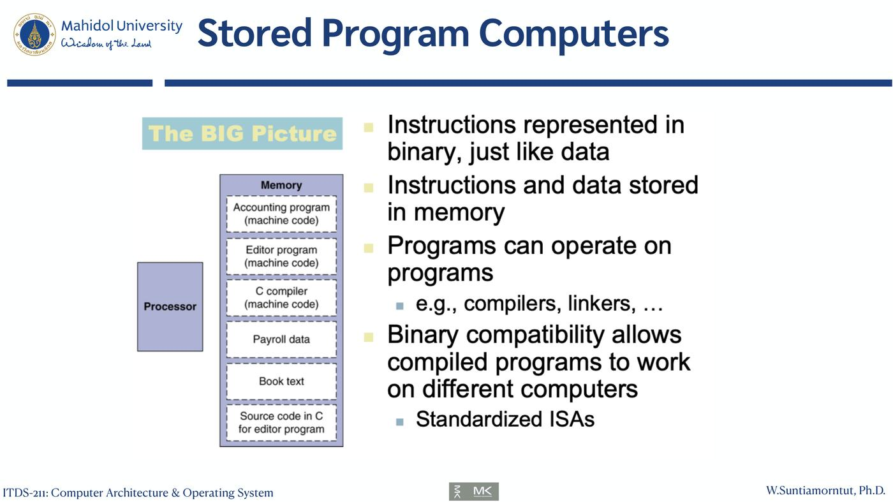
- คำสั่งถูกแทนเป็นเลขฐานสองเหมือนข้อมูล
- คำสั่งและข้อมูลเก็บใน memory
- โปรแกรมทำงานกับโปรแกรมได้ เช่น compilers, linkers, …
- Binary compatibility ทำให้โปรแกรมที่คอมไพล์แล้วรันบนคอมพิวเตอร์อื่นได้ → Standardized ISAs
- ภาพ: Memory เก็บ Accounting program, Editor program, C compiler (machine code), Payroll data, Book text, Source code in C for editor program
15.2 Logical Operations
| Operation | C | Java | RISC-V |
|---|---|---|---|
| Shift left | << | << | slli |
| Shift right | >> | >>> | srli |
| Bit-by-bit AND | & | & | and, andi |
| Bit-by-bit OR | | | | | or, ori |
| Bit-by-bit XOR | ^ | ^ | xor, xori |
| Bit-by-bit NOT | ~ | ~ | (ใช้ xor กับ 1 ทั้งหมด) |
- ใช้ ดึงหรือแทรกกลุ่มบิต ใน word
15.3 Shift Operations
| funct6 | immed | rs1 | funct3 | rd | opcode |
|---|---|---|---|---|---|
| 6 bits | 6 bits | 5 bits | 3 bits | 5 bits | 7 bits |
- immed: เลื่อนกี่ตำแหน่ง
- Shift left logical: เลื่อนซ้ายเติม 0 →
sllii บิต = คูณ 2ⁱ - Shift right logical: เลื่อนขวาเติม 0 →
srlii บิต = หาร 2ⁱ (unsigned เท่านั้น)
15.4 AND / OR / XOR
| Operation | ใช้ทำ | ตัวอย่าง |
|---|---|---|
AND and x9,x10,x11 |
mask bits — เลือกบางบิต เคลียร์ที่เหลือเป็น 0 | x10 = …00001101 11000000, x11 = …0011 1100 00000000 → x9 = …000011 00 00000000 |
OR or x9,x10,x11 |
include bits — ตั้งบางบิตเป็น 1 ที่เหลือไม่เปลี่ยน | → x9 = …00111101 11000000 |
XOR xor x9,x10,x12 |
differencing — x12 เป็น 1 ทั้งหมด → ได้ NOT | x9 = …11110010 00111111 |
16. Conditional Operations ⭐
16.1 Branch
- กระโดดไปคำสั่งที่มี label ถ้าเงื่อนไขจริง ไม่งั้นทำต่อตามลำดับ
beq rs1, rs2, L1— ถ้า rs1 == rs2 กระโดดไป L1bne rs1, rs2, L1— ถ้า rs1 != rs2 กระโดดไป L1
16.2 Compiling If Statements
if (i==j) f = g+h;
else f = g-h;
f, g, … อยู่ใน x19, x20, …
bne x22, x23, Else // ถ้า i != j ไป Else
add x19, x20, x21 // f = g + h
beq x0, x0, Exit // unconditional (0 == 0 เสมอ)
Else: sub x19, x20, x21 // f = g - h
Exit: … // Assembler calculates addresses
💡 เทคนิค: ทดสอบเงื่อนไขกลับด้าน (bne แทน ==) เพื่อข้ามส่วน then /
beq x0,x0= กระโดดแน่นอน
16.3 Compiling Loop Statements
while (save[i] == k) i += 1;
i ใน x22, k ใน x24, address ของ save ใน x25
Loop: slli x10, x22, 3 // x10 = i * 8
add x10, x10, x25 // x10 = address ของ save[i]
ld x9, 0(x10) // x9 = save[i]
bne x9, x24, Exit // ถ้า save[i] != k ออก
addi x22, x22, 1 // i += 1
beq x0, x0, Loop // วนกลับ
Exit: …
16.4 Basic Blocks
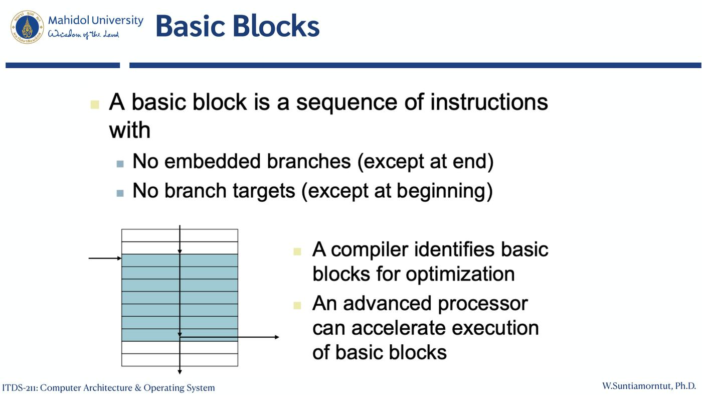
- Basic block = ลำดับคำสั่งที่
- ไม่มี branch ฝังอยู่ (ยกเว้นตอนท้าย)
- ไม่มี branch target (ยกเว้นตอนต้น)
- compiler ใช้หา basic block เพื่อ optimize
- processor ขั้นสูงเร่งการทำงานของ basic block ได้
16.5 More Conditional Operations
blt rs1, rs2, L1— ถ้า rs1 < rs2 กระโดดbge rs1, rs2, L1— ถ้า rs1 >= rs2 กระโดด- ตัวอย่าง:
if (a > b) a += 1;(a ใน x22, b ใน x23)
bge x23, x22, Exit // branch if b >= a
addi x22, x22, 1
Exit:
16.6 Signed vs Unsigned
- Signed comparison:
blt,bge - Unsigned comparison:
bltu,bgeu - ตัวอย่าง:
- x22 = 1111 1111 1111 1111 1111 1111 1111 1111
- x23 = 0000 0000 0000 0000 0000 0000 0000 0001
- x22 < x23 // signed → −1 < +1
- x22 > x23 // unsigned → +4,294,967,295 > +1
⚠️ บิตชุดเดียวกัน ผลเปรียบเทียบต่างกัน ขึ้นกับว่าตีความเป็น signed หรือ unsigned
17. Procedure Calling ⭐⭐
17.1 ขั้นตอนเรียก procedure (6 ขั้น)
- วาง parameters ใน registers x10 ถึง x17
- ส่งการควบคุมไปที่ procedure
- จองพื้นที่เก็บข้อมูล สำหรับ procedure
- ทำงานของ procedure
- วางผลลัพธ์ใน register ให้ caller
- กลับไปจุดที่เรียก (address อยู่ใน x1)
17.2 Procedure Call Instructions
- Procedure call: jump and link
jal x1, ProcedureLabel- address ของคำสั่งถัดไปถูกเก็บใน x1
- กระโดดไป target address
- Procedure return: jump and link register
jalr x0, 0(x1)- เหมือน jal แต่ กระโดดไป 0 + address ใน x1
- ใช้ x0 เป็น rd (x0 เปลี่ยนค่าไม่ได้ จึงเท่ากับทิ้ง return address)
- ใช้ทำ computed jumps ได้ด้วย เช่น case/switch statements
17.3 Leaf Procedure Example
Leaf procedure = ฟังก์ชันที่ไม่มีการ call เรียกออกไปหาฟังก์ชันอื่น
long long int leaf_example (long long int g, long long int h,
long long int i, long long int j) {
long long int f;
f = (g + h) - (i + j);
return f;
}
- Arguments g, …, j ใน x10, …, x13
- f ใน x20
- temporaries x5, x6
- ต้องเก็บ x5, x6, x20 ลง stack
leaf_example:
addi sp, sp, -24 // จองที่ stack 3 × 8 bytes
sd x5, 16(sp) // Save x5, x6, x20 on stack
sd x6, 8(sp)
sd x20, 0(sp)
add x5, x10, x11 // x5 = g + h
add x6, x12, x13 // x6 = i + j
sub x20, x5, x6 // f = x5 - x6
addi x10, x20, 0 // copy f to return register
ld x20, 0(sp) // Restore x5, x6, x20 from stack
ld x6, 8(sp)
ld x5, 16(sp)
addi sp, sp, 24 // คืนพื้นที่ stack
jalr x0, 0(x1) // Return to caller
(สไลด์พิมพ์บรรทัดที่ 6 เป็น add x6,x12,x1 — ที่ถูกคือ x13 = j)
17.4 Local Data on the Stack
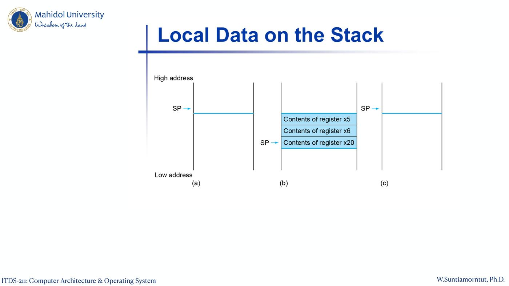
- (a) ก่อนเรียก: SP ชี้ตำแหน่งเดิม
- (b) ระหว่างรัน: SP ลดลง 24 มีช่อง Contents of register x5, x6, x20
- (c) หลังคืน: SP กลับที่เดิม
- stack โตจาก high address ลงไป low address (จึง
addi sp, sp, -24)
17.5 Register Usage
| ชุด register | ประเภท | กติกา |
|---|---|---|
| x5–x7, x28–x31 | temporary registers | callee ไม่ต้องรักษาค่า |
| x8–x9, x18–x27 | saved registers | ถ้า callee ใช้ ต้อง save และ restore |
💡 ในตัวอย่าง leaf ที่ save x5, x6 ด้วยเป็นแบบระวังไว้ก่อน ตามกติกาจริงไม่จำเป็นต้อง save temporaries
17.6 Non-Leaf Procedures
- procedure ที่เรียก procedure อื่น
- สำหรับ nested call caller ต้อง save ลง stack:
- return address ของตัวเอง
- arguments และ temporaries ที่ยังต้องใช้หลัง call
- restore จาก stack หลัง call
17.7 Non-Leaf Procedure Example: Factorial ⭐
long long int fact (long long int n) {
if (n < 1) return 1; // สไลด์พิมพ์ return f;
else return n * fact(n - 1);
}
Argument n ใน x10 / Result ใน x10
fact:
addi sp, sp, -16 // Save return address and n on stack
sd x1, 8(sp)
sd x10, 0(sp)
addi x5, x10, -1 // x5 = n - 1
bge x5, x0, L1 // if n >= 1, go to L1
addi x10, x0, 1 // Else, set return value to 1
addi sp, sp, 16 // Pop stack, don't bother restoring values
jalr x0, 0(x1) // Return
L1: addi x10, x10, -1 // n = n - 1
jal x1, fact // call fact(n-1)
addi x6, x10, 0 // move result of fact(n-1) to x6
ld x10, 0(sp) // Restore caller's n
ld x1, 8(sp) // Restore caller's return address
addi sp, sp, 16 // Pop stack
mul x10, x10, x6 // return n * fact(n-1)
jalr x0, 0(x1) // return
💡 ทำไมต้อง save x1? เพราะ
jal x1, factจะเขียนทับ x1 ด้วย return address ใหม่ ถ้าไม่เก็บไว้ ตัวเองจะกลับไปหาคนเรียกไม่ได้ ทำไมต้อง save x10 (n)? เพราะหลังเรียก fact(n−1) ยังต้องใช้ n มาคูณ แต่ x10 ถูกเปลี่ยนไปแล้ว
18. Memory Layout, Local Data, Character Data, Byte Operations
18.1 Memory Layout
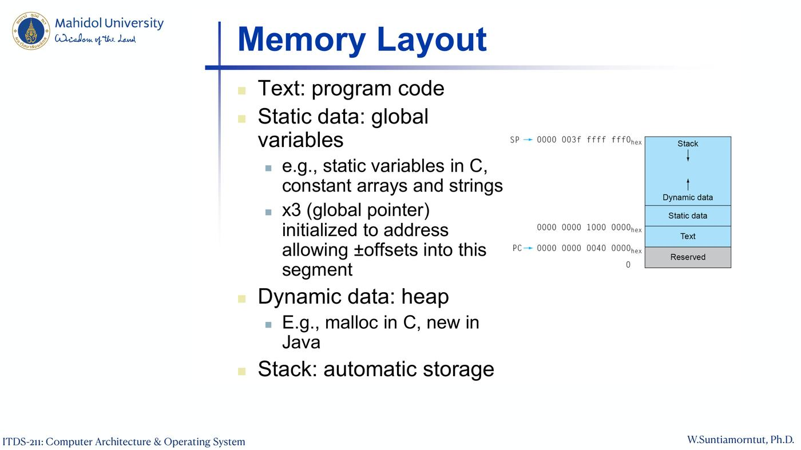
| Segment | เก็บอะไร | ตำแหน่ง (จากภาพ) |
|---|---|---|
| Reserved | สงวน | ล่างสุด (address 0) |
| Text | program code | เริ่มที่ PC → 0000 0000 0040 0000₁₆ |
| Static data | global variables เช่น static variables ใน C, constant arrays, strings — x3 (global pointer) ตั้งไว้ที่ address ที่ใช้ ±offset เข้าถึง segment นี้ | 0000 0000 1000 0000₁₆ |
| Dynamic data (heap) | เช่น malloc ใน C, new ใน Java — โตขึ้นบน | |
| Stack | automatic storage — โตลงล่าง | SP → 0000 003f ffff fff0₁₆ |
18.2 Local Data on the Stack
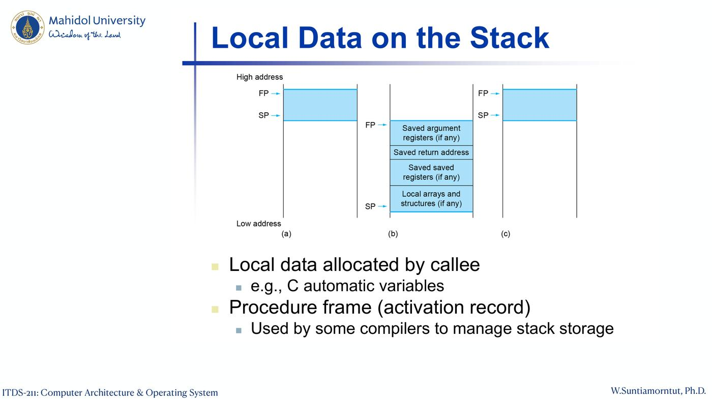
- ข้อมูล local ถูกจองโดย callee เช่น C automatic variables
- Procedure frame (activation record) — บาง compiler ใช้จัดการพื้นที่ stack
- frame มี: Saved argument registers (if any), Saved return address, Saved saved registers (if any), Local arrays and structures (if any) — อยู่ระหว่าง FP (frame pointer) และ SP
18.3 Character Data
- Byte-encoded character sets:
- ASCII: 128 ตัว (95 graphic, 33 control)
- Latin-1: 256 ตัว (ASCII + 96 graphic เพิ่ม)
- Unicode: 32-bit character set
- ใช้ใน Java, C++ wide characters, …
- รวม ตัวอักษรส่วนใหญ่ของโลก และสัญลักษณ์
- UTF-8, UTF-16: variable-length encodings
18.4 Byte/Halfword/Word Operations
| กลุ่ม | คำสั่ง | ผล |
|---|---|---|
| Load (signed) | lb, lh, lw rd, offset(rs1) |
Sign extend เป็น 64 บิตใน rd |
| Load unsigned | lbu, lhu, lwu rd, offset(rs1) |
Zero extend เป็น 64 บิตใน rd |
| Store | sb, sh, sw rs2, offset(rs1) |
เก็บ 8/16/32 บิตขวาสุด |
💡 ตัวอักษรท้าย: b = byte (8), h = halfword (16), w = word (32), d = doubleword (64), u = unsigned
ส่วน C — RISC-V in details: Part II (Self-study)
สไลด์ระบุว่าส่วนนี้ "Students can explore by themselves"
19. String Copy Example
void strcpy (char x[], char y[]) {
size_t i;
i = 0;
while ((x[i]=y[i])!='\0')
i += 1;
}
- ใช้ null-terminated string
strcpy:
addi sp, sp, -8 // adjust stack for 1 doubleword
sd x19, 0(sp) // push x19
add x19, x0, x0 // i = 0
L1: add x5, x19, x11 // x5 = addr of y[i]
lbu x6, 0(x5) // x6 = y[i]
add x7, x19, x10 // x7 = addr of x[i]
sb x6, 0(x7) // x[i] = y[i]
beq x6, x0, L2 // if y[i] == 0 then exit
addi x19, x19, 1 // i = i + 1
jal x0, L1 // next iteration of loop
L2: ld x19, 0(sp) // restore saved x19
addi sp, sp, 8 // pop 1 doubleword from stack
jalr x0, 0(x1) // and return
(สไลด์พิมพ์บรรทัด L1 เป็น add x5,x19,x10 — y อยู่ใน x11 จึงควรเป็น x11)
- ใช้ x19 (saved register) เก็บ i จึงต้อง push/pop
- char มีขนาด 1 byte จึงไม่ต้องคูณ 8 และใช้
lbu/sb
20. Wide Immediates และ Addressing
20.1 32-bit Constants
- ค่าคงที่ส่วนใหญ่เล็ก → immediate 12 บิตพอ
- สำหรับค่าคงที่ 32 บิตที่มีบ้าง:
lui rd, constant- คัดลอกค่าคงที่ 20 บิต ไปที่บิต [31:12] ของ rd
- ขยายบิต 31 ไปที่บิต [63:32]
- เคลียร์บิต [11:0] ของ rd เป็น 0
ตัวอย่าง: โหลด 0x003D0500 ลง x19
lui x19, 976 // 0x003D0 → x19 = 0000 0000 0011 1101 0000 | 0000 0000 0000
addi x19, x19, 128 // 0x500 → x19 = 0000 0000 0011 1101 0000 | 0101 0000 0000
(สไลด์เขียน addi 128 แต่ค่า 0x500 = 1280; ส่วนล่าง 0101 0000 0000 ตามภาพคือ 0x500)
20.2 Branch Addressing
- branch ระบุ opcode, register 2 ตัว, target address
- branch target ส่วนใหญ่อยู่ใกล้ (ไปข้างหน้าหรือถอยหลัง)
- SB format:
| imm[12] | imm[10:5] | rs2 | rs1 | funct3 | imm[4:1] | imm[11] | opcode |
|---|
- PC-relative addressing: Target address = PC + immediate × 2
20.3 Jump Addressing
jalใช้ immediate 20 บิต เพื่อกระโดดได้ไกลกว่า- UJ format:
| imm[20] | imm[10:1] | imm[11] | imm[19:12] | rd | opcode |
|---|---|---|---|---|---|
| 5 bits | 7 bits |
- กระโดดไกลมาก เช่น ไป absolute address 32 บิต:
lui: โหลด address[31:12] ลง temp registerjalr: บวก address[11:0] แล้วกระโดดไป target
20.4 RISC-V Addressing Summary
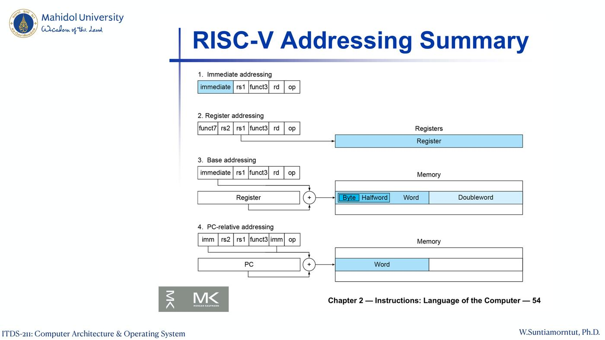
| Mode | วิธีหา operand | ใช้กับ |
|---|---|---|
| 1. Immediate addressing | operand คือ immediate ในคำสั่งเลย | addi |
| 2. Register addressing | operand อยู่ใน register | add (R-format) |
| 3. Base addressing | register + immediate → address ใน memory (byte/halfword/word/doubleword) | ld, sd |
| 4. PC-relative addressing | PC + immediate → address | branch |
20.5 RISC-V Encoding Summary
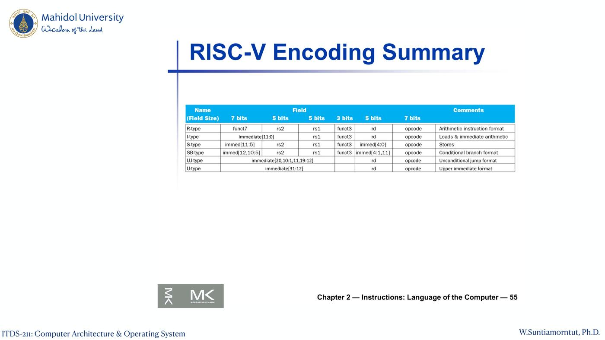
| Name | 7 bits | 5 bits | 5 bits | 3 bits | 5 bits | 7 bits | Comments |
|---|---|---|---|---|---|---|---|
| R-type | funct7 | rs2 | rs1 | funct3 | rd | opcode | Arithmetic instruction format |
| I-type | immediate[11:0] (12) | rs1 | funct3 | rd | opcode | Loads & immediate arithmetic | |
| S-type | immed[11:5] | rs2 | rs1 | funct3 | immed[4:0] | opcode | Stores |
| SB-type | immed[12,10:5] | rs2 | rs1 | funct3 | immed[4:1,11] | opcode | Conditional branch format |
| UJ-type | immediate[20,10:1,11,19:12] (20) | rd | opcode | Unconditional jump format | |||
| U-type | immediate[31:12] (20) | rd | opcode | Upper immediate format |
21. Synchronization
21.1 ปัญหา
- 2 processors ใช้ memory ร่วมกัน: P1 เขียน แล้ว P2 อ่าน
- Data race ถ้า P1 และ P2 ไม่ synchronize → ผลลัพธ์ขึ้นกับลำดับการเข้าถึง
- ต้องมี hardware support:
- Atomic read/write memory operation — ไม่มีใครเข้าถึงตำแหน่งนั้นได้ระหว่างอ่านกับเขียน
- เป็น คำสั่งเดียว ได้ เช่น atomic swap ของ register ↔ memory
- หรือ คู่คำสั่งแบบ atomic
21.2 Synchronization in RISC-V
- Load reserved:
lr.d rd, (rs1)- โหลดจาก address ใน rs1 ลง rd
- จอง (reservation) address นั้นไว้
- Store conditional:
sc.d rd, (rs1), rs2- เก็บค่าจาก rs2 ไปที่ address ใน rs1
- สำเร็จถ้าตำแหน่งนั้นไม่ถูกเปลี่ยนตั้งแต่
lr.d→ คืน 0 ใน rd - ล้มเหลวถ้าถูกเปลี่ยน → คืน ค่าไม่ใช่ศูนย์ ใน rd
Example 1: atomic swap (test/set lock variable)
again: lr.d x10, (x20)
sc.d x11, (x20), x23 // x11 = status
bne x11, x0, again // branch if store failed
addi x23, x10, 0 // x23 = loaded value
Example 2: lock
addi x12, x0, 1 // copy locked value
again: lr.d x10, (x20) // read lock
bne x10, x0, again // check if it is 0 yet
sc.d x11, (x20), x12 // attempt to store
bne x11, x0, again // branch if fails
Unlock:
sd x0, 0(x20) // free lock
💡 เชื่อมกับครึ่ง OS หัวข้อ Synchronization: lock ต้องอาศัยคำสั่งระดับ hardware ที่ atomic แบบนี้
22. Translation and Startup
22.1 ภาพรวม
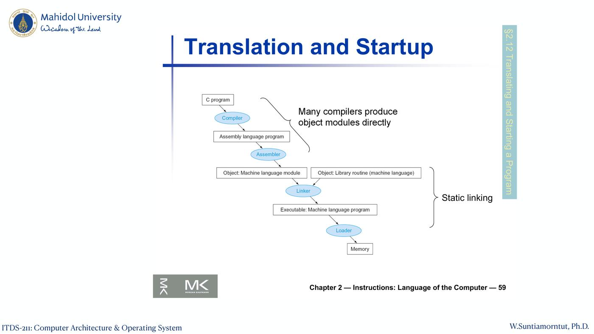
C program → Compiler → Assembly language program → Assembler → Object (machine language module) + Object (library routine) → Linker → Executable → Loader → Memory
- compiler หลายตัวสร้าง object module ได้โดยตรง
- Static linking: รวม library เข้า executable ตอน link
22.2 Producing an Object Module
- Assembler (หรือ compiler) แปลโปรแกรมเป็นคำสั่งเครื่อง
- ให้ข้อมูลสำหรับประกอบโปรแกรมสมบูรณ์จากชิ้นส่วน:
| ส่วน | เก็บอะไร |
|---|---|
| Header | อธิบายเนื้อหาของ object module |
| Text segment | คำสั่งที่แปลแล้ว |
| Static data segment | ข้อมูลที่จองตลอดอายุโปรแกรม |
| Relocation info | สำหรับเนื้อหาที่ขึ้นกับตำแหน่ง absolute ของโปรแกรมที่โหลด |
| Symbol table | global definitions และ external references |
| Debug info | เชื่อมกับ source code |
22.3 Linking Object Modules
- สร้าง executable image
- รวม segments
- Resolve labels (หา address จริง)
- Patch การอ้างอิงที่ขึ้นกับตำแหน่งและ external refs
- อาจปล่อยการขึ้นกับตำแหน่งไว้ให้ relocating loader แก้
- แต่ถ้ามี virtual memory ไม่จำเป็น
- โปรแกรม โหลดที่ตำแหน่ง absolute ใน virtual memory space ได้
22.4 Loading a Program
โหลดจาก image file บน disk เข้า memory:
- อ่าน header หาขนาด segment
- สร้าง virtual address space
- คัดลอก text และ initialized data ลง memory (หรือตั้ง page table entries ให้ fault เข้ามาทีหลัง)
- ตั้ง arguments บน stack
- ตั้งค่า registers (รวม sp, fp, gp)
- กระโดดไป startup routine
- คัดลอก arguments ไป x10, … แล้ว เรียก main
- เมื่อ main return ทำ exit syscall
💡 เชื่อมกับ Lecture 2 (OS): นี่คือขั้น "process creation" ในมุมของ loader
22.5 Dynamic Linking
- link/load library procedure เฉพาะตอนถูกเรียก
- ต้องให้โค้ด procedure relocatable ได้
- หลีกเลี่ยง image บวม จาก static linking ของ library ทั้งหมดที่ถูกอ้างถึง
- ได้ library เวอร์ชันใหม่อัตโนมัติ
22.6 Lazy Linkage
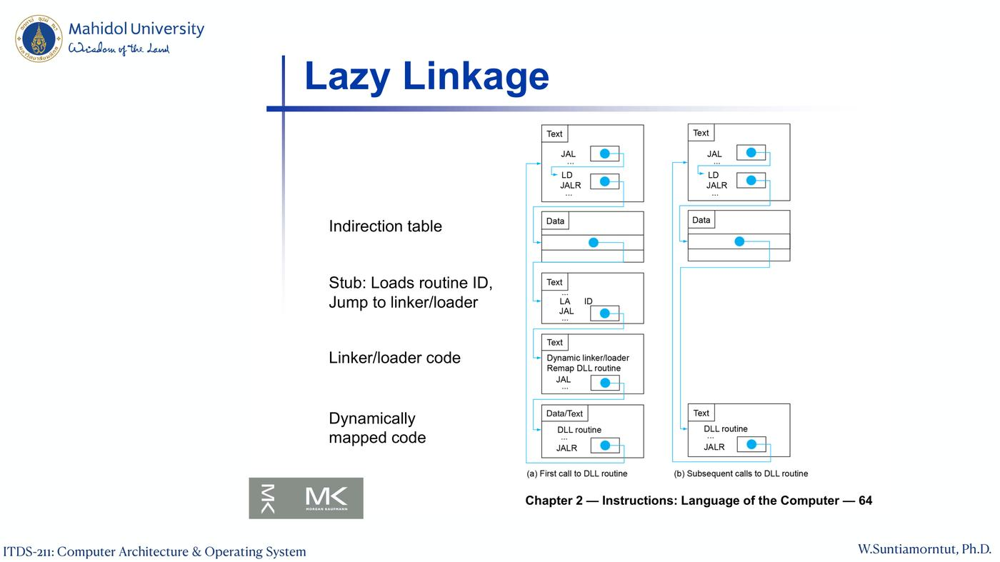
- (a) First call to DLL routine: โปรแกรมกระโดดผ่าน Indirection table → Stub (Loads routine ID, Jump to linker/loader) → Linker/loader code (Dynamic linker/loader, Remap DLL routine) → Dynamically mapped code (DLL routine)
- (b) Subsequent calls: indirection table ถูกแก้ให้ชี้ไป DLL routine โดยตรงแล้ว ไม่ต้องผ่าน linker อีก
22.7 Starting Java Applications
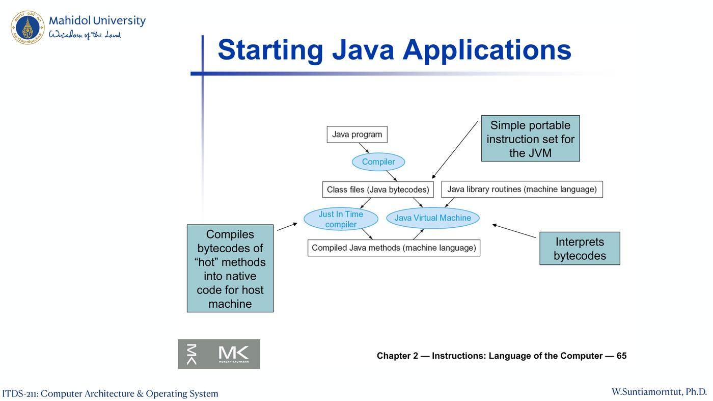
- Java program → Compiler → Class files (Java bytecodes)
- Java bytecodes = ชุดคำสั่งพกพาได้แบบง่ายสำหรับ JVM
- Java Virtual Machine ใช้ Class files + Java library routines (machine language) → แปลความ (interprets) bytecodes
- Just In Time (JIT) compiler: คอมไพล์ bytecodes ของ method ที่ "hot" (ถูกเรียกบ่อย) เป็น native code ของเครื่อง → Compiled Java methods (machine language)
23. C Sort Example
23.1 Swap Procedure (leaf)
void swap(long long int v[], long long int k) {
long long int temp;
temp = v[k];
v[k] = v[k+1];
v[k+1] = temp;
}
v ใน x10, k ใน x11, temp ใน x5
swap:
slli x6, x11, 3 // reg x6 = k * 8
add x6, x10, x6 // reg x6 = v + (k * 8)
ld x5, 0(x6) // reg x5 (temp) = v[k]
ld x7, 8(x6) // reg x7 = v[k + 1]
sd x7, 0(x6) // v[k] = reg x7
sd x5, 8(x6) // v[k+1] = reg x5 (temp)
jalr x0, 0(x1) // return to calling routine
23.2 Sort Procedure in C (non-leaf, เรียก swap)
void sort (long long int v[], size_t n) {
size_t i, j;
for (i = 0; i < n; i += 1) {
for (j = i – 1; j >= 0 && v[j] > v[j + 1]; j -= 1) {
swap(v,j);
}
}
}
v ใน x10, n ใน x11, i ใน x19, j ใน x20
23.3 Outer Loop
li x19, 0 // i = 0
for1tst:
bge x19, x11, exit1 // go to exit1 if x19 ≥ x11 (i ≥ n)
(body of outer for-loop)
addi x19, x19, 1 // i += 1
j for1tst // branch to test of outer loop
exit1:
23.4 Inner Loop
addi x20, x19, -1 // j = i − 1
for2tst:
blt x20, x0, exit2 // go to exit2 if x20 < 0 (j < 0)
slli x5, x20, 3 // reg x5 = j * 8
add x5, x10, x5 // reg x5 = v + (j * 8)
ld x6, 0(x5) // reg x6 = v[j]
ld x7, 8(x5) // reg x7 = v[j + 1]
ble x6, x7, exit2 // go to exit2 if x6 ≤ x7
mv x21, x10 // copy parameter x10 into x21
mv x22, x11 // copy parameter x11 into x22
mv x10, x21 // first swap parameter is v
mv x11, x20 // second swap parameter is j
jal x1, swap // call swap
addi x20, x20, -1 // j –= 1
j for2tst // branch to test of inner loop
exit2:
💡 ทำไมต้องย้าย x10, x11 ไปเก็บใน x21, x22? เพราะต้องส่งค่าใหม่ให้ swap ทาง x10, x11 แต่ sort ยังต้องใช้ v และ n เดิมต่อ จึงเก็บสำเนาไว้ใน saved registers
23.5 Preserving Registers
// Preserve saved registers:
addi sp, sp, -40 // make room on stack for 5 regs
sd x1, 32(sp) // save x1 on stack
sd x22, 24(sp) // save x22 on stack
sd x21, 16(sp) // save x21 on stack
sd x20, 8(sp) // save x20 on stack
sd x19, 0(sp) // save x19 on stack
// Restore saved registers:
exit1:
ld x19, 0(sp) // restore x19 from stack
ld x20, 8(sp) // restore x20 from stack
ld x21, 16(sp) // restore x21 from stack
ld x22, 24(sp) // restore x22 from stack
ld x1, 32(sp) // restore x1 from stack
addi sp, sp, 40 // restore stack pointer
jalr x0, 0(x1)
(สไลด์พิมพ์ส่วน restore เป็น sd — การ restore ที่ถูกต้องต้องใช้ ld)
24. Effect of Compiler Optimization และ Language/Algorithm
24.1 Effect of Compiler Optimization
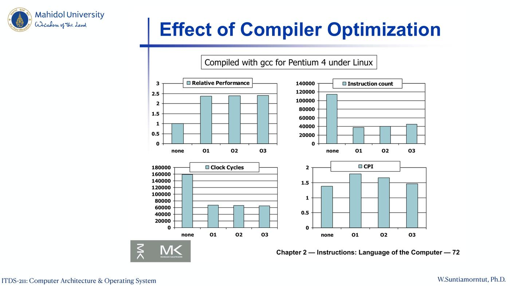
คอมไพล์ด้วย gcc สำหรับ Pentium 4 บน Linux เทียบ optimization none, O1, O2, O3 ใน 4 กราฟ: Relative Performance, Clock Cycles, Instruction count, CPI
- optimization ช่วยเพิ่ม performance และลด clock cycles/instruction count ได้ แต่ CPI ไม่ได้ลดตาม เสมอ
24.2 Effect of Language and Algorithm
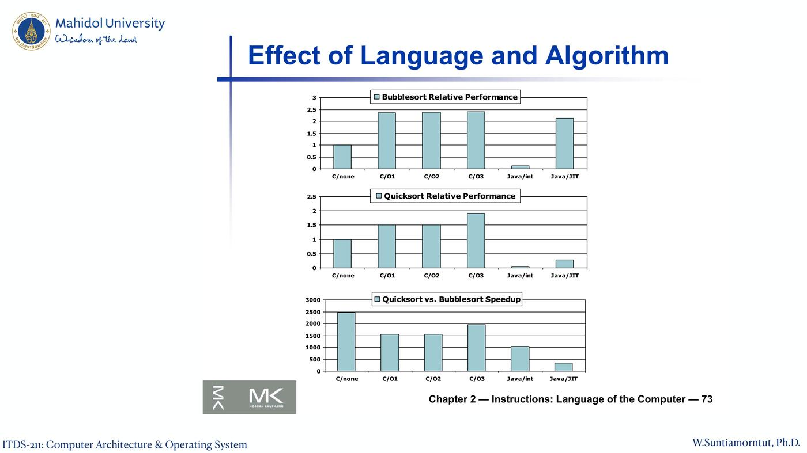
3 กราฟ: Bubblesort Relative Performance, Quicksort Relative Performance, Quicksort vs Bubblesort Speedup เทียบ C/none, C/O1, C/O2, C/O3, Java/int (interpreted), Java/JIT
- Quicksort เร็วกว่า Bubblesort หลักพันเท่า (แกนกราฟ speedup ไปถึง ~3000)
24.3 Lessons Learnt ⭐
- Instruction count และ CPI ไม่ใช่ตัวชี้วัด performance ที่ดีถ้าดูแยกกัน
- Compiler optimizations ไวต่อ algorithm
- Java/JIT เร็วกว่า JVM interpreted อย่างมาก
- เทียบได้กับ optimized C ในบางกรณี
- Nothing can fix a dumb algorithm! (ไม่มีอะไรช่วย algorithm ที่แย่ได้)
25. Arrays vs Pointers
25.1 หลักการ
- Array indexing ต้อง: คูณ index ด้วยขนาด element + บวกกับ base address ของ array
- Pointers ตรงกับ memory address โดยตรง → หลีกเลี่ยงความซับซ้อนของ indexing
25.2 Example: Clearing an Array
| clear1 — ใช้ array index | clear2 — ใช้ pointer |
|---|---|
for (i = 0; i < size; i += 1) array[i] = 0; |
for (p = &array[0]; p < &array[size]; p = p + 1) *p = 0; |
// clear1
li x5, 0 // i = 0
loop1: slli x6, x5, 3 // x6 = i * 8
add x7, x10, x6 // x7 = address of array[i]
sd x0, 0(x7) // array[i] = 0
addi x5, x5, 1 // i = i + 1
blt x5, x11, loop1 // if (i<size) go to loop1
// clear2
mv x5, x10 // p = address of array[0]
slli x6, x11, 3 // x6 = size * 8
add x7, x10, x6 // x7 = address of array[size]
loop2: sd x0, 0(x5) // Memory[p] = 0
addi x5, x5, 8 // p = p + 8
bltu x5, x7, loop2 // if (p<&array[size]) go to loop2
25.3 Comparison of Array vs Pointer
- การคูณถูก "strength reduced" เป็น shift
- เวอร์ชัน array ต้องมี shift อยู่ในลูป (เป็นส่วนของการคำนวณ index ทุกรอบที่ i เพิ่ม) เทียบกับการเพิ่ม pointer ตรง ๆ
- compiler ทำได้ผลเท่ากับการใช้ pointer เอง ด้วย induction variable elimination
- ควรเขียนโปรแกรมให้อ่านง่ายและปลอดภัยกว่า (ปล่อยให้ compiler optimize)
26. MIPS, Other RISC-V Instructions, Extensions
26.1 MIPS Instructions
- MIPS: รุ่นก่อนเชิงพาณิชย์ของ RISC-V
- ชุดคำสั่งพื้นฐานคล้ายกัน:
- คำสั่ง 32 บิต
- general purpose registers 32 ตัว, register 0 เป็น 0 เสมอ
- floating-point registers 32 ตัว
- เข้าถึง memory ด้วย load/store เท่านั้น
- addressing mode สม่ำเสมอ สำหรับข้อมูลทุกขนาด
- ต่างกันที่ conditional branch สำหรับ <, <=, >, >=
- RISC-V:
blt,bge,bltu,bgeu - MIPS:
slt,sltu(set less than ได้ผล 0 หรือ 1) แล้วใช้beq,bneต่อ
- RISC-V:
26.2 Instruction Encoding: RISC-V vs MIPS
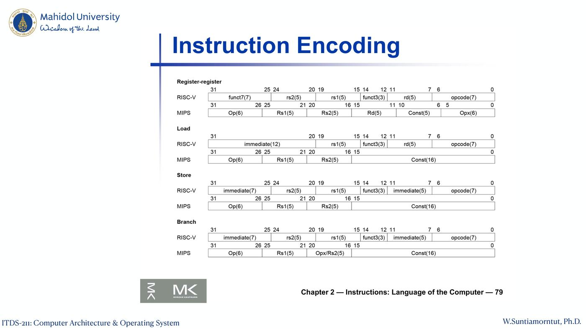
| ประเภท | RISC-V | MIPS |
|---|---|---|
| Register-register | funct7(7) rs2(5) rs1(5) funct3(3) rd(5) opcode(7) | Op(6) Rs1(5) Rs2(5) Rd(5) Const(5) Opx(6) |
| Load | immediate(12) rs1(5) funct3(3) rd(5) opcode(7) | Op(6) Rs1(5) Rs2(5) Const(16) |
| Store | immediate(7) rs2(5) rs1(5) funct3(3) immediate(5) opcode(7) | Op(6) Rs1(5) Rs2(5) Const(16) |
| Branch | immediate(7) rs2(5) rs1(5) funct3(3) immediate(5) opcode(7) | Op(6) Rs1(5) Opx/Rs2(5) Const(16) |
💡 RISC-V วาง opcode ไว้บิตล่าง และ rs1/rs2 อยู่ตำแหน่งเดิมทุก format ส่วน MIPS วาง opcode บิตบนและ immediate 16 บิต
26.3 Other RISC-V Instructions
- Base integer instructions (RV64I): คำสั่งที่เรียนมา บวก:
auipc rd, immed// rd = (imm<<12) + pc → ตามด้วยjalr(บวก immediate 12 บิต) สำหรับ long jumpslt, sltu, slti, sltui: set less than (แบบ MIPS)addw, subw, addiw: add/sub 32 บิตsllw, srlw, sraw, slliw, srliw, sraiw: shift 32 บิต
- 32-bit variant: RV32I — registers กว้าง 32 บิต, operations 32 บิต
26.4 Instruction Set Extensions
| ตัวอักษร | ความหมาย |
|---|---|
| M | integer multiply, divide, remainder |
| A | atomic memory operations |
| F | single-precision floating point |
| D | double-precision floating point |
| C | compressed instructions — encoding 16 บิตสำหรับคำสั่งที่ใช้บ่อย |
27. คำศัพท์สำคัญ
| คำศัพท์ | ความหมาย | จำง่าย ๆ ว่า |
|---|---|---|
| Unsigned | ไม่มีเครื่องหมาย 0 ถึง 2ⁿ − 1 | บวกล้วน |
| Sign & Magnitude | บิตแรกเป็นเครื่องหมาย ที่เหลือเป็นขนาด | ศูนย์สองแบบ |
| Radix | ฐานของระบบเลข | |
| (r−1)'s / r's complement | (rⁿ−1) − m / rⁿ − m | 9's/10's, 1's/2's |
| 1's complement | กลับทุกบิต | end-around carry |
| 2's complement | กลับทุกบิต + 1 | ศูนย์แบบเดียว, −128 ถึง +127 |
| End-around carry | carry วนไปบวก LSB (1's complement) | |
| Bias / Excess notation | ค่าจริง = unsigned − bias | biased-127 |
| Floating point | (−1)ˢ × m × 2ᵉ | ทศนิยม |
| Mantissa / Exponent | ส่วนเลขนัยสำคัญ / เลขยกกำลัง | |
| IEEE 754 single / double | 1+8+23 / 1+11+52 บิต | 32 / 64 |
| Normalized | รูปแบบ 1.xxx | |
| NaN | Not a Number (E = 255) | |
| ASCII | 7 บิต 128 ตัว + parity | A=65, a=97 |
| EBCDIC / Latin-1 / Unicode | มาตรฐานตัวอักษรอื่น / 256 ตัว / 32 บิต | |
| UTF-8, UTF-16 | variable-length encoding ของ Unicode | |
| RISC-V | open ISA จาก UC Berkeley | |
| Doubleword / Word | 64 บิต / 32 บิต | d / w |
| x0, x1, x2 | 0 / return address / stack pointer | |
| Temporary vs Saved registers | x5–7, x28–31 ไม่ต้องรักษา / x8–9, x18–27 ต้อง save | |
| Byte addressed | 1 address = 1 byte | offset × 8 |
| Little / Big endian | LSB / MSB อยู่ address ต่ำสุด | RISC-V = little |
| Immediate operand | ค่าคงที่ในคำสั่ง (addi) | |
| Sign / Zero extension | ขยายบิตด้วย sign bit / 0 | lb / lbu |
| Machine code | คำสั่งในรูปเลขฐานสอง | |
| opcode, rd, rs1, rs2, funct3, funct7 | field ของคำสั่ง | |
| R / I / S / SB / UJ / U format | arithmetic / load, immediate / store / branch / jump / upper immediate | |
| Design Principles 1–3 | simplicity favours regularity / smaller is faster / good design demands good compromises | |
| Stored program / Binary compatibility | คำสั่งเก็บใน memory เหมือนข้อมูล / รันข้ามเครื่องได้ | |
| slli / srli | คูณ / หาร 2ⁱ | |
| Mask / Include bits | AND / OR | |
| beq, bne, blt, bge, bltu, bgeu | conditional branch | |
| Basic block | ลำดับคำสั่งไม่มี branch ข้างใน | |
| jal / jalr | call (เก็บ return address ใน x1) / return | |
| Leaf / Non-leaf procedure | ไม่เรียก / เรียกฟังก์ชันอื่น | |
| Stack / Procedure frame | automatic storage / activation record | โตลงล่าง |
| Text / Static data / Heap / Stack | โค้ด / global / malloc / local | memory layout |
| lui | โหลด 20 บิตบน | ค่าคงที่ 32 บิต |
| PC-relative addressing | target = PC + imm × 2 | branch |
| Immediate / Register / Base / PC-relative | 4 addressing modes | |
| Data race | ผลขึ้นกับลำดับการเข้าถึง | |
| lr.d / sc.d | load reserved / store conditional | atomic |
| Object module | header, text, static data, relocation, symbol table, debug | |
| Linker / Loader | รวมโมดูลเป็น executable / โหลดเข้า memory | |
| Static / Dynamic linking | รวมตอน link / link ตอนเรียก | |
| Lazy linkage | ผ่าน stub ครั้งแรก แล้วเรียกตรง | |
| JVM / JIT | interpret bytecodes / คอมไพล์ method ที่ hot | |
| Strength reduction | เปลี่ยนคูณเป็น shift | |
| Induction variable elimination | compiler optimize loop แบบ pointer | |
| MIPS | รุ่นก่อนเชิงพาณิชย์ของ RISC-V (slt + beq/bne) | |
| RV64I / RV32I | base integer 64 / 32 บิต | |
| M, A, F, D, C | extensions |
28. สรุปท้ายบท / จุดที่มักออกสอบ
Data Representation
- n-bit unsigned: 0 ถึง 2ⁿ − 1
- 3 วิธีแทนค่าลบ: S&M, complement, bias
- S&M: −(2ⁿ−1) ถึง +(2ⁿ−1), ศูนย์ 2 แบบ, บวกลบต้องใช้ operation ต่างกัน
- (r−1)'s = (rⁿ−1) − m, r's = rⁿ − m (382 → 617, 618)
- 1's complement: กลับบิต, −127 ถึง +127, ศูนย์ 2 แบบ, end-around carry (6 + (−3) บน 3 บิต = 011)
- 2's complement: กลับบิต + 1 (short-cut: คงบิตจนถึง 1 ตัวแรกจากขวา แล้วกลับที่เหลือ), −128 ถึง +127, ศูนย์เดียว, ทิ้ง carry (6 + (−5) = 0001)
- ตาราง 8 บิต: 1000 0000 = −0 / −127 / −128; 1111 1111 = −127 / −0 / −1
- Bias-127: ค่า = unsigned − 127, ช่วง −127 ถึง +128
- IEEE single: 1 + 8 + 23, N = (−1)ˢ × 1.m × 2^(E−127), E = 1–254, 0/255 สงวน, e = −126 ถึง +127
- IEEE double: 1 + 11 + 52
- 17.15 → sign 0, E = 131 = 1000 0011, mantissa 0001 0010 0110…
- Fraction → binary: คูณ 2 เก็บเลขหน้าจุด (0.8125 = .1101)
- ASCII: 7 บิต 128 ตัว + parity; '0' ≠ 0; ตัวใหญ่-เล็กต่าง 0x20 (A = 65, a = 97)
RISC-V
- Design principles 3 ข้อ และ Great Idea "make the common case fast" (immediate)
- ตาราง register x0–x31 (x0=0, x1=ra, x2=sp, x10–x17 args, temporaries/saved)
- Memory: byte addressed, little endian, offset = index × 8 (A[8] → 64(x22))
- Signed range: −2ⁿ⁻¹ ถึง 2ⁿ⁻¹ − 1; negation = complement + 1; lb sign-extend, lbu zero-extend
- R-format: funct7|rs2|rs1|funct3|rd|opcode (7,5,5,3,5,7); add x9,x20,x21 = 015A04B3₁₆
- I-format: imm(12)|rs1|funct3|rd|opcode; S-format: imm[11:5]|rs2|rs1|funct3|imm[4:0]|opcode
- Logical: slli (×2ⁱ), srli (÷2ⁱ unsigned), and (mask), or (include), xor (NOT กับ 1 ทั้งหมด)
- If/while แปลงด้วย bne/beq; beq x0,x0 = unconditional
- Signed vs unsigned compare: 111…1 เป็น −1 (signed) แต่เป็น 4,294,967,295 (unsigned)
- Procedure 6 ขั้น, jal x1 / jalr x0,0(x1), leaf vs non-leaf (save x1 และ argument), stack โตลงล่าง
- Memory layout: reserved, text, static data (x3 gp), heap, stack
- Formats 6 แบบ และ addressing 4 แบบ; branch target = PC + imm × 2
- lr.d / sc.d สำหรับ atomic operations
- Translation: compiler → assembler → linker → loader; object module 6 ส่วน; linking 3 ขั้น; loading 6 ขั้น; dynamic linking และ lazy linkage; Java JIT
- Lessons: IC และ CPI ดูแยกไม่ได้, optimization ขึ้นกับ algorithm, JIT เร็วกว่า interpreter มาก, nothing can fix a dumb algorithm
- Array vs pointer: strength reduction, induction variable elimination → เขียนให้อ่านง่ายดีกว่า
- MIPS vs RISC-V: slt+beq vs blt/bge; Extensions M, A, F, D, C
จุดที่สไลด์พิมพ์ผิด (ควรระวังตอนอ่าน)
- Arithmetic example บรรทัดสุดท้ายควรเป็น
sub - leaf_example:
add x6,x12,x1ควรเป็นx13 - fact:
return fควรเป็นreturn 1 - sort restore ใช้
sdควรเป็นld - strcpy: address ของ y[i] ควรใช้ x11
คู่ที่มักสับสน
| คู่ | ต่างกันที่ |
|---|---|
| 1's vs 2's complement | ศูนย์ 2 แบบ, end-around carry vs ศูนย์เดียว, ทิ้ง carry |
| Signed vs Unsigned compare | blt/bge vs bltu/bgeu |
| Sign vs Zero extension | เติมด้วย sign bit vs เติม 0 (lb vs lbu) |
| Little vs Big endian | LSB vs MSB ที่ address ต่ำ |
| Temporary vs Saved registers | ไม่ต้องรักษา vs callee ต้อง save/restore |
| Leaf vs Non-leaf | ไม่เรียกต่อ vs ต้อง save return address |
| Static vs Dynamic linking | รวมทั้งหมดตอน link vs link ตอนเรียกใช้ |
| E vs e (IEEE) | ค่าที่เก็บ (มี bias) vs เลขยกกำลังจริง |